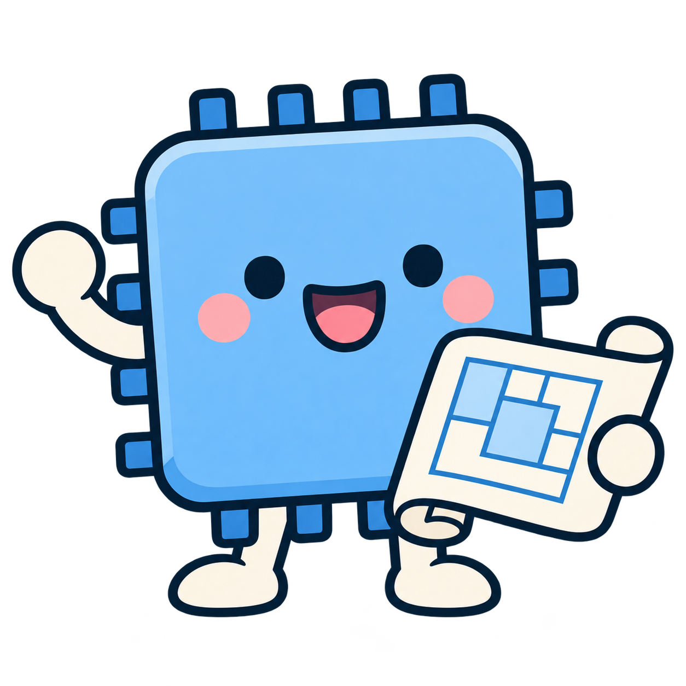

01주 3–5회
자율 스터디
필요한 공부를, 나의 속도로.
수학, 물리, 영어, 프로그래밍, 전공과목까지.
정해진 과목이나 진도 없이 각자 공부합니다.
영남대학교 반도체 학술동아리
반도체를 배우고, 나누고, 직접 설계하는 곳.
YU Silicon Valley에서 함께 시작해요.
1기 회원 상시 모집 중

01 / ABOUT US
YU Silicon Valley는 반도체에 대한 관심을
함께 공부하고 설계하는 힘으로 연결하는 학술동아리입니다.
각자의 속도로 기초를 다지고, 배운 것을 나누며,
실제 반도체 설계 역량을 함께 키워갑니다.
02 / HOW WE LEARN
혼자 집중하는 시간과 함께 넓히는 시간.
두 가지 배움의 방식으로 이어갑니다.
필요한 공부를, 나의 속도로.
수학, 물리, 영어, 프로그래밍, 전공과목까지.
정해진 과목이나 진도 없이 각자 공부합니다.
배운 것을 나누고, 함께 설계해요.
전공 지식 발표와 토론, 기술 동향 분석,
설계 실습과 공동 프로젝트를 이어갑니다.
기초를 다지고 → 직접 설계하고 → 공모전에 도전하기
대한민국 반도체설계대전 등 공모전 참가와 입상을 목표로 합니다.03 / SILICON NOTES
어려운 개념도 쉽게, 쉬운 설명도 정확하게.
우리가 함께 쌓아가는 반도체 지식입니다.
팹, 팹리스, 파운드리, IDM, OSAT.
비슷해 보이는 이름 속 서로 다른 역할을
귀여운 칩 마스코트와 함께 알아봐요.
기업·학술기관 등의 자료를 바탕으로 내용을 확인합니다.
소자에서 논리회로, 설계와 검증까지.
기초 개념을 차근차근 연결해 나갈 예정입니다.
CMOS의 동작 원리반도체 소자
예정 주제RTL과 Verilog의 역할디지털 설계
예정 주제FPGA와 ASIC의 차이설계 방식
예정 주제공식 발표와 원문 출처를 확인하고,
사실과 전망을 구분해 쉽게 전할 예정입니다.
HBM과 차세대 메모리메모리 기술
관심 분야AI 반도체와 설계 기술산업·기술 동향
관심 분야첨단 반도체 패키징연결과 집적
관심 분야04 / GOOD TO KNOW
정해진 과목이나 공통 진도를 강제하지 않습니다. 각자 필요한 수학, 물리, 영어, 프로그래밍, 전공과목 등을 자유롭게 공부하며 학습 습관을 만들어갑니다.
주 1회 반도체 전공 지식을 발표하고 토론합니다. 기술 동향을 살펴보고 디지털 논리회로, Python, Verilog 등의 실습과 공동 프로젝트·공모전 준비를 진행합니다.
실제 반도체 설계 역량을 쌓아 대한민국 반도체설계대전 등 각종 공모전에 참가하고 입상하는 것을 목표로 합니다. 꾸준히 만든 교육 콘텐츠를 학회의 학술 자료로 축적하는 것도 중요한 목표입니다.
현재 1기 회원을 상시 모집하고 있습니다. 아래 ‘지원서 작성하기’ 버튼을 누르면 학회가 제공한 Google 지원서로 이동합니다. 자세한 모집 내용과 작성 항목은 지원서에서 확인해 주세요.
1기 회원 상시 모집
같은 목표를 가진 사람들과 배우고 나누는 시간.
YU Silicon Valley의 시작에 함께하세요.